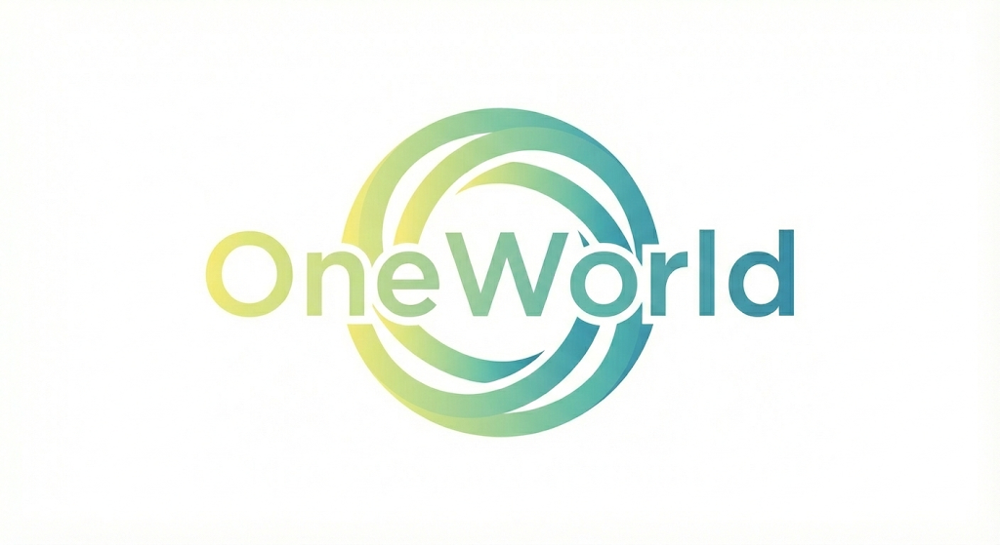
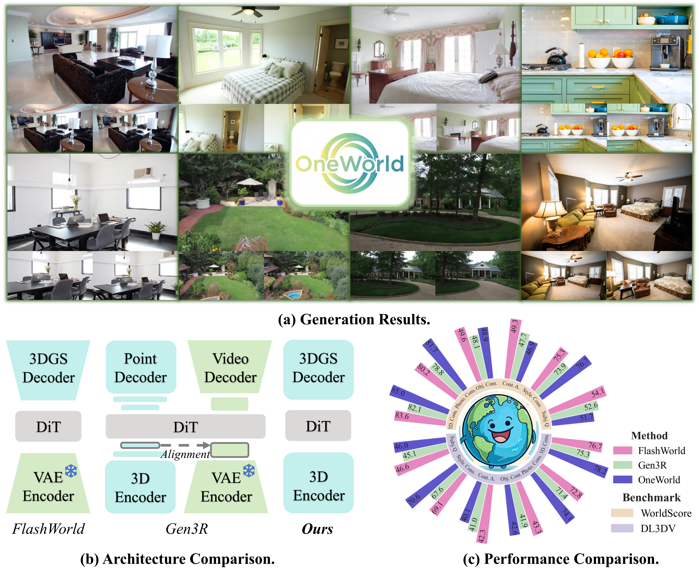
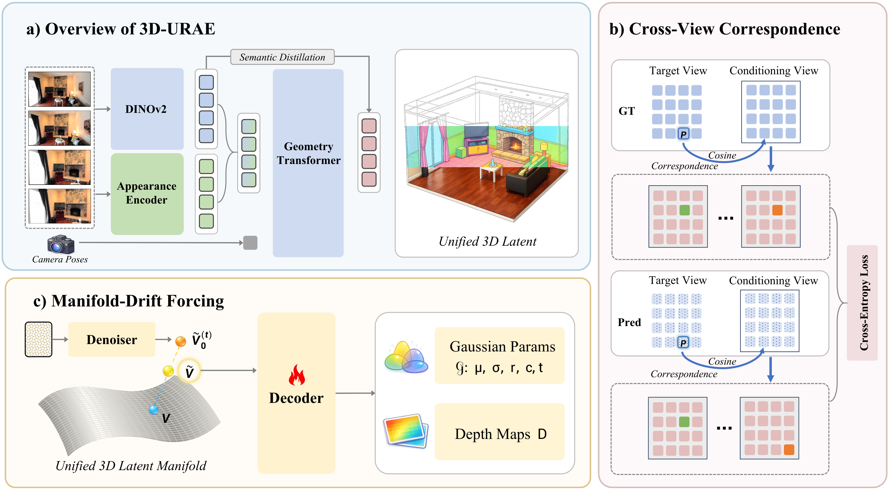
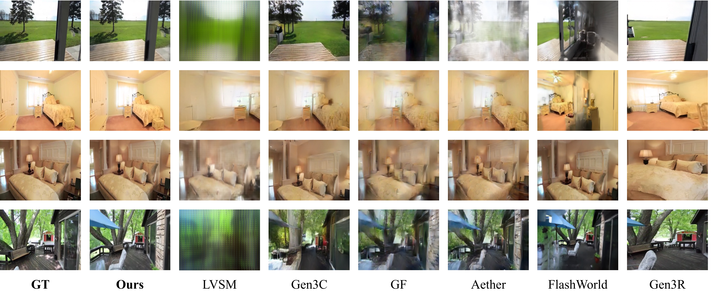
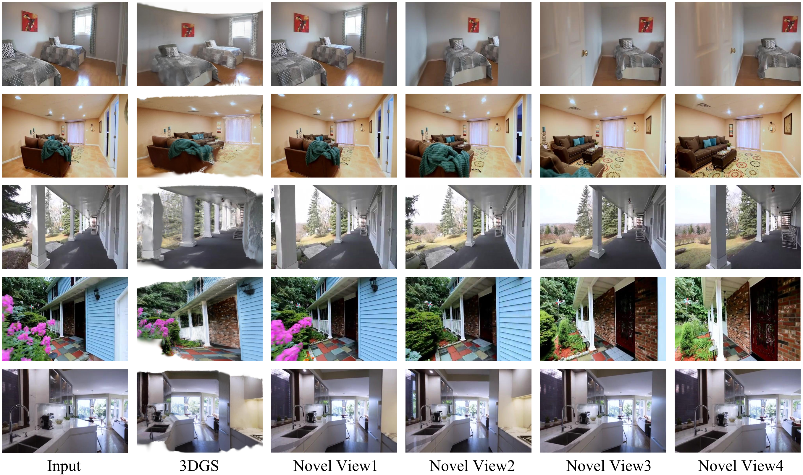
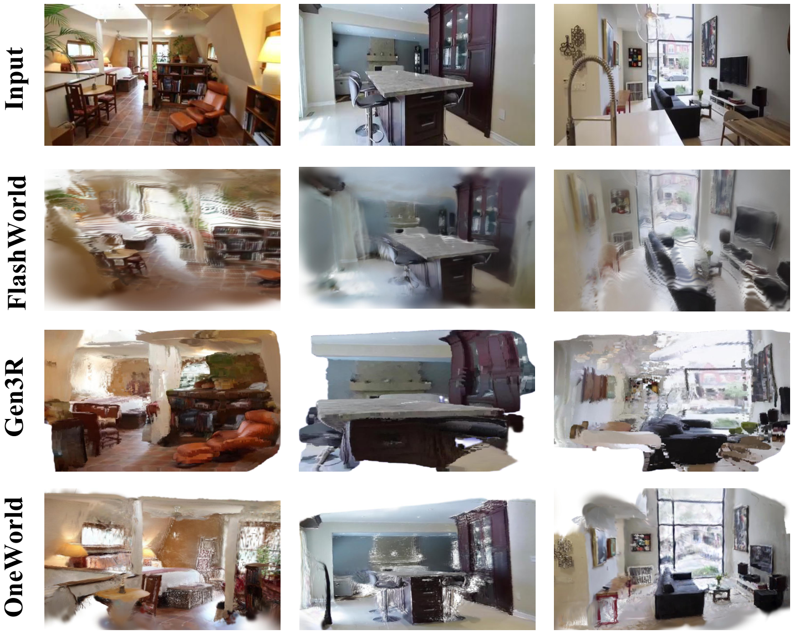
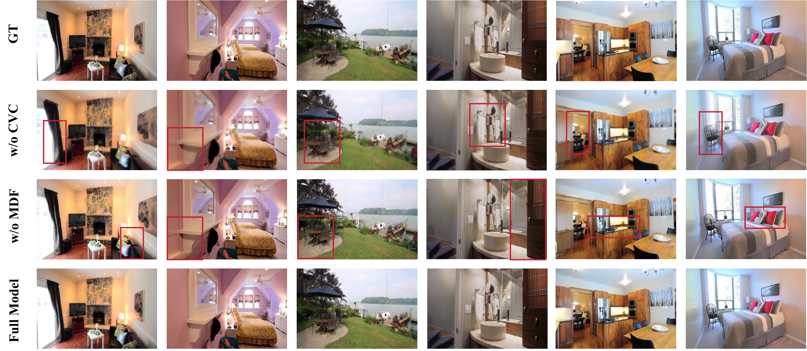
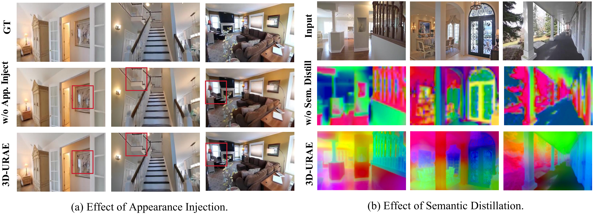

(a) OneWorld generates 3DGS from a single view and renders novel views. (b) Architecture comparison: OneWorld generates directly in a unified 3D representation space, without compression or separate generation. (c) Performance comparison on WorldScore and DL3DV.
Existing diffusion-based 3D scene generation methods primarily operate in 2D image/video latent spaces, which makes maintaining cross-view appearance and geometric consistency inherently challenging. To bridge this gap, we present OneWorld, a framework that performs diffusion directly within a coherent 3D representation space. Central to our approach is the 3D Unified Representation Autoencoder (3D-URAE); it leverages pretrained 3D foundation models and augments their geometry-centric nature by injecting appearance and distilling semantics into a unified 3D latent space. Furthermore, we introduce token-level Cross-View-Correspondence (CVC) consistency loss to explicitly enforce structural alignment across views, and propose Manifold-Drift Forcing (MDF) to mitigate train–inference exposure bias and shape a robust 3D manifold by mixing drifted and original representations. Comprehensive experiments demonstrate that OneWorld generates high-quality 3D scenes with superior cross-view consistency compared to state-of-the-art 2D-based methods.
Built upon pretrained 3D foundation models, 3D-URAE injects appearance and distills semantics to jointly encode geometry, appearance, and semantics into a unified 3D latent space for diffusion-based generation.
A token-level correspondence-preserving loss for conditional diffusion training, explicitly enforcing structural alignment between target and conditioning views to improve cross-view consistency.
Identifies sampling drift from train–inference mismatch and trains the 3DGS decoder on mixed diffusion-sampled and ground-truth latents to shape a robust 3D manifold for stable sampling.

(a) Unified 3D representation space with appearance injection and semantic distillation. (b) Cross-view correspondence preserving during DiT training. (c) Manifold-drift forcing: mixing ground-truth 3D features with sampled features for robust 3D decoding.
| Method | RealEstate10K | DL3DV-10K | ||||
|---|---|---|---|---|---|---|
| PSNR ↑ | SSIM ↑ | LPIPS ↓ | PSNR ↑ | SSIM ↑ | LPIPS ↓ | |
| LVSM | 18.24 | 0.657 | 0.331 | 14.62 | 0.478 | 0.571 |
| Gen3C | 17.85 | 0.641 | 0.345 | 14.31 | 0.465 | 0.589 |
| GF | 18.92 | 0.678 | 0.298 | 15.18 | 0.512 | 0.521 |
| Aether | 19.45 | 0.695 | 0.275 | 15.67 | 0.535 | 0.498 |
| FlashWorld | 20.13 | 0.710 | 0.258 | 16.24 | 0.561 | 0.462 |
| Gen3R | 20.48 | 0.718 | 0.249 | 16.51 | 0.572 | 0.445 |
| OneWorld (Ours) | 21.57 | 0.735 | 0.231 | 17.19 | 0.589 | 0.418 |



Comparison of 3D scenes: Gen3R uses point clouds, while FlashWorld and OneWorld use 3DGS.
| Variant | PSNR ↑ | SSIM ↑ | LPIPS ↓ |
|---|---|---|---|
| w/o CVC | 19.10 | 0.682 | 0.284 |
| w/o MDF | 20.59 | 0.714 | 0.256 |
| Full Model | 21.57 | 0.735 | 0.231 |

Visualization of ablation study: full model vs. variants without CVC and without MDF.

Effects of appearance injection (improved visual quality) and semantic distillation (structured feature space).
@article{gao2025oneworld,
title={OneWorld: Taming Scene Generation with 3D Unified Representation Autoencoder},
author={Gao, Sensen and Wang, Zhaoqing and Cao, Qihang and Yu, Dongdong and Wang, Changhu and Liu, Tongliang and Gong, Mingming and Bian, Jiawang},
journal={arXiv preprint},
year={2025}
}